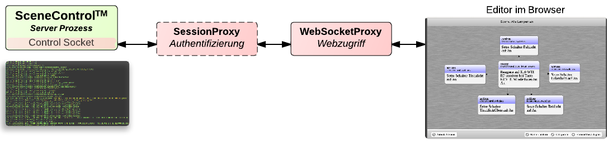

Der ausführende Kernprozess, im Schaubild mittig dargestellt, wird im weiteren SceneServer genannt. Dieser Kernprozess ist sehr minimalistisch konstruiert um die Fehleranfälligkeit zu minimieren. Die Datenhaltung läuft in diesem Prozesskontext, der Kommando-Socket und ein Thread-Pool für aktuell ausgeführte Szenen. Die eigentliche Funktionalität wird über Pluginprozesse bereitgestellt. In der Grafik sind diese um den Kernprozess herum skizziert. Pluginprozesse können untereinander kommunizieren (Abhängigkeitsverhältnis).
Der SceneServer baut nach dem Start eine Verbindung zur Datenhaltung auf und fordert Plugin Konfigurationen an. Eine Plugin Konfiguration besteht aus genau den Parametern um eine neue Plugin Instanz zu starten. Eine Plugin Instanz ist ein eigenständiger Systemprozess. Stürzt ein solcher Prozess ab, etwa weil die Hardware nicht wie erwartet reagiert, hat das keine negativen Konsequenzen für den SceneServer.
Aus der Datenhaltung werden anschließend alle Szenen angefordert und in ausführbare Objekte überführt. Alle auf diesen Szenen registrierten Ereignisse werden bei den zuständigen Plugin-Instanzen registriert.
Sobald ein registriertes Ereignis eintritt, wird der SceneServer kontaktiert und die mit dem Ereignis verbundene Szene wird ausgeführt.
Durch die Trennung in Prozesse mit fest gelegtem, eingegrenztem Aufgabenbereich ist die Ausfallsicherheit der gesamten Architektur besonders hoch und für den 24/7 Betrieb ausgelegt.
Über einen TCP Port i.d.R. Port 3101 können per JSON kodierte Nachrichten an den Prozess abgesetzt werden. Der Server selber bietet dabei keine Session- oder Sicherheitsverwaltung. Diese Funktionalitäten können mit zusätzlichen Proxy Prozessen abgedeckt werden.
Der SessionProxy handelt mit dem SceneServer einen neuen Port für das JSON Kommandointerface aus und öffnet selber den JSON Kommandointerface Port. Somit werden effektiv alle neuen Verbindungen über den SessionProxy ablaufen. Alle Verbindungen erfordern ab dann eine Authentifizierung gegenüber den auf dem Betriebssystem vorhandenen Benutzern. Zugriffsrechte werden durch Gruppenmitgliedschaften des angegeben Benutzers geregelt und müssen in der SessionProxy Konfiguration gesondert angegeben werden. Ein Beispiel: Ein Nutzer wählt über die Android App eine Szene zur Ausführung aus. Der SessionProxy wird diese Ausführungsanfrage nur an den SceneServer weiterleiten, wenn der Nutzer sich als "{NUTZER}" beim Start der Android App authorisiert hat.
Über den Websocketsproxy können sich Webclients über das WebSocket Protokoll mit dem SceneServer verbinden und das JSON Kommandointerface des SceneServers nutzen.
Plugins sind als eigene Prozesse modelliert, welche selbstständig eine Kommunikationsverbindung zum Server aufbauen müssen. Da viele Qt Container und Basisklassen serialisiert werden können, wird ein einfaches QDataStream basiertes Protokoll für die Kommunikation zwischen Plugin Prozess und SceneServer verwendet. Unter Windows werden NamedPipes, unter Linux/MacOS UnixSockets verwendet. Plugins können Eigenschaften (properties) besitzen und auf Eigenschaftsänderungen des Servers oder anderer Plugins reagieren. Für C++ Plugins gibt es ein PluginInterface, welches zu implementieren ist. Theoretisch können auch andere Programmiersprachen für Plugins verwendet werden.
Ereignisse, Bedingungen, Aktionen und Szenen werden als JSON Objekte direkt auf dem Dateisystem hinterlegt. Die Datenspeicherung ist durch eine eigene Bibliothek gekapselt um einen leichten Austausch durch andere Technologien zu ermöglichen. Die Speicherung auf dem Dateisystem bietet jedoch bereits das Erfassen von Änderungen der Daten durch Drittanwendungen sowie die Nutzung üblicher Dateiverwaltungswerkzeuge. Manuelles Replizieren sowie regelmäßige Sicherungen können auf Dateiebene genutzt werden (Dropbox, github, ...).
Eine Szene definiert sich durch einen Namen, gfs. zugewiesene Kategorien und Szenenelementen. Szenenelemente sind Ereignisse, Bedingungen und Aktionen, welche als gerichteter Graph organisiert sind. Ein Graph enthält Knoten und Kanten, welche die Knoten verbinden. Übertragen auf eine Szene sind dadurch i.d.R. Ereignisse über Kanten mit Bedingungen verknüpft, welche wiederum mit Aktionen verbunden sind. Eine solche Kette von Szenenelementen heißt hier Ereigniskette.
Eine Ereigniskette kann Verzweigungen besitzen, also von einem Element kann diese zu zwei oder mehr Elementen weiterführen. Eine Szene kann mehrere Ereignisketten enthalten. Weiter oben wurde festgestellt, dass eine Szene bei Eintritt eines seiner Ereignisse ausgeführt wird. Tatsächlich wird aber nur die Ereigniskette ab dem Punkt abgearbeitet, wo sich dieses Ereignis befindet.
Ein Beispiel: Ein Ereignis kann das Eintreten eines gewissen Zeitpunktes sein, eine daran angebundene Bedingung könnte einen Steckdosenzustand prüfen, eine darauf folgende Aktion löst etwa das Ändern der Lichwerte von Leuchtdioden aus.